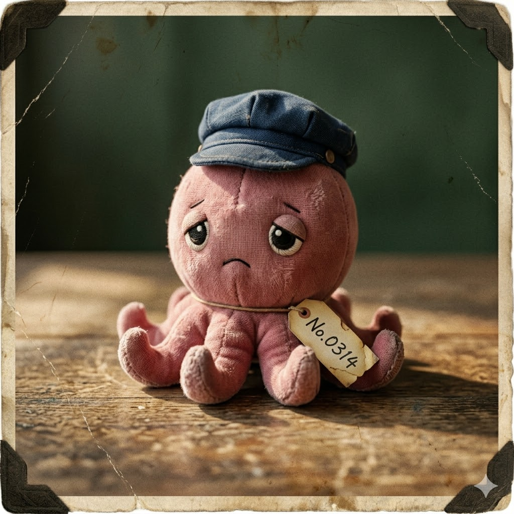

もう一つだけ、伝えておきたいことがある。
タコのぬいぐるみを、手放さないでほしい。
あなたがそれを持ってここに来たとき、私はようやく分かった。タコのぬいぐるみは私たちを繋ぐ唯一のものだ。時代を超えて、ループを超えて。
相馬の海のタコは、特別だ。祖母がよくそう言っていた。████あなたが言っていたのだと、今は知っている。
猫塚清治のことを、記録し続けてほしい。あなたが記録するから、私は存在できる。私が存在するから、あなたはここに来た。
記録されなかったものは、存在しなかったことになる。
だから、記録する。何度でも。
── 蛸川小蘭より、蛸川小蘭へ
そして、これを読んでいるあなたへ